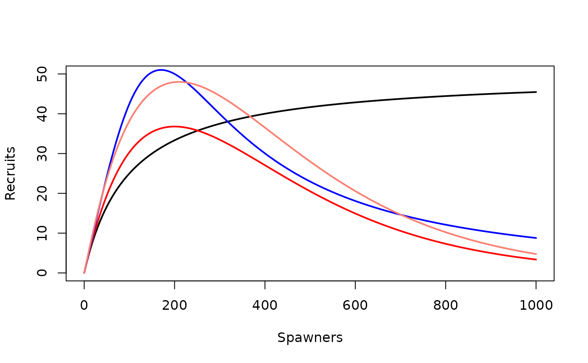
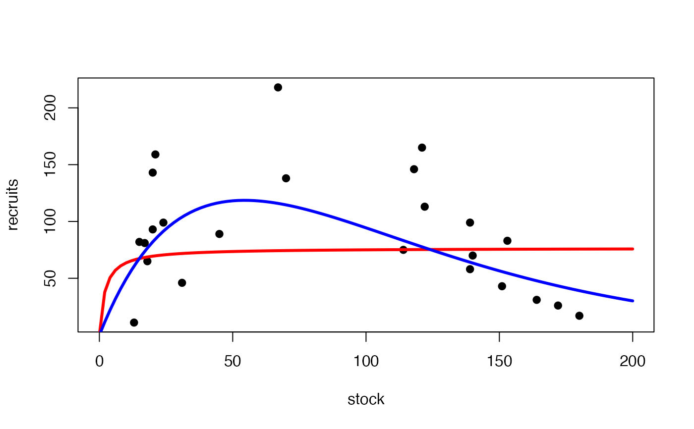

Creates a function for a specific parameterization of a common stock-recruitment function .
Source:R/stockRecruitment.R
srFuns.RdCreates a function for a specific parameterization of a “Beverton-Holt”, “Ricker”, “Shepherd”, or “Saila-Lorda” stock-recruitment function. Use srFunShow() to see the equations of each function.
Arguments
- type
A string that indicates the type of stock-recruitment function.
- param
A single numeric that indicates the parameterization of the stock-recruitment function.
- simple
A logical that indicates whether the user should be allowed to send all parameter values in the first parameter argument (
=FALSE; default) or whether all individual parameters must be specified (=TRUE).- msg
A logical that indicates whether a message about the function and parameter definitions should be output (
=TRUE) or not (=FALSE; default).- plot
A logical that indicates whether the growth function expression should be shown as an equation in a simple plot.
- ...
Not implemented.
Value
srFuns returns a function that can be used to predict recruitment given a vector of stock sizes and values for the function parameters. The result should be saved to an object that can then be used as a function name. When the resulting function is used, the parameters are ordered as shown when the definitions of the parameters are printed after the function is called (assuming that msg=TRUE). The values for both/all parameters can be included as a vector of length two/three in the first parameter argument. If simple=FALSE then the values for all parameters can be included as a vector in the first parameter argument. If simple=TRUE then all parameters must be declared individually in each function. The resulting function is somewhat easier to read when simple=TRUE.
srFunShow returns an expression that can be use with plotmath to show the function equation in a pretty format. See examples.
References
Ogle, D.H. 2016. Introductory Fisheries Analyses with R. Chapman & Hall/CRC, Boca Raton, FL.
Beverton, R.J.H. and S.J. Holt. 1957. On the dynamics of exploited fish populations, Fisheries Investigations (Series 2), volume 19. United Kingdom Ministry of Agriculture and Fisheries, 533 pp.
Iles, T.C. 1994. A review of stock-recruitment relationships with reference to flatfish populations. Netherlands Journal of Sea Research 32:399-420.
Quinn II, T.J. and R.B. Deriso. 1999. Quantitative Fish Dynamics. Oxford University Press.
Ricker, W.E. 1954. Stock and recruitment. Journal of the Fisheries Research Board of Canada 11:559-623.
Ricker, W.E. 1975. Computation and interpretation of biological statistics of fish populations. Technical Report Bulletin 191, Bulletin of the Fisheries Research Board of Canada. [Was (is?) from http://www.dfo-mpo.gc.ca/Library/1485.pdf.]
Shepherd, J. 1982. A versatile new stock-recruitment relationship for fisheries and construction of sustainable yield curves. Journal du Conseil International pour l'Exploration de la Mar 40:67-75.
See also
See srStarts for related functionality.
Author
Derek H. Ogle, DerekOgle51@gmail.com, thanks to Gabor Grothendieck for a hint about using get().
Examples
## See the formulae
## Simple Examples
# show what a message looks like with the function definition
srFuns("Ricker",msg=TRUE)
#> You have chosen the first parameterization of the 'Ricker' S-R function.
#>
#> E[R|S] = a*S*exp(-b*S)
#>
#> where a = the density-independent slope near S=0.
#> b = density-dependent parameter.
#> function (S, a, b = NULL)
#> {
#> if (length(a) > 1) {
#> b <- a[[2]]
#> a <- a[[1]]
#> }
#> a * S * exp(-b * S)
#> }
#> <bytecode: 0x564893ea6c60>
#> <environment: 0x5648aa9906a8>
# create some dummy stock data
stock <- seq(0.01,1000,length.out=199)
# Beverton-Holt #1 parameterization
( bh1 <- srFuns() )
#> function (S, a, b = NULL)
#> {
#> if (length(a) > 1) {
#> b <- a[[2]]
#> a <- a[[1]]
#> }
#> a * S/(1 + b * S)
#> }
#> <bytecode: 0x564893eb0ec8>
#> <environment: 0x5648aaa1c860>
plot(bh1(stock,a=0.5,b=0.01)~stock,type="l",lwd=2,ylab="Recruits",xlab="Spawners",ylim=c(0,50))
# Ricker #1 parameterization
( r1 <- srFuns("Ricker") )
#> function (S, a, b = NULL)
#> {
#> if (length(a) > 1) {
#> b <- a[[2]]
#> a <- a[[1]]
#> }
#> a * S * exp(-b * S)
#> }
#> <bytecode: 0x564893ea6c60>
#> <environment: 0x5648aaac78b0>
lines(r1(stock,a=0.5,b=0.005)~stock,lwd=2,col="red")
# Shephered parameterization
( s1 <- srFuns("Shepherd") )
#> function (S, a, b = NULL, c = NULL)
#> {
#> if (length(a) > 1) {
#> c <- a[[3]]
#> b <- a[[2]]
#> a <- a[[1]]
#> }
#> a * S/(1 + (b * S)^c)
#> }
#> <bytecode: 0x564893ea21e0>
#> <environment: 0x5648aab5aea0>
lines(s1(stock,a=0.5,b=0.005,c=2.5)~stock,lwd=2,col="blue")
# Saila-Lorda parameterization
( sl1 <- srFuns("SailaLorda") )
#> function (S, a, b = NULL, c = NULL)
#> {
#> if (length(a) > 1) {
#> c <- a[[3]]
#> b <- a[[2]]
#> a <- a[[1]]
#> }
#> a * (S^c) * exp(-b * S)
#> }
#> <bytecode: 0x564893ea3670>
#> <environment: 0x5648aabf2500>
lines(sl1(stock,a=0.5,b=0.005,c=1.05)~stock,lwd=2,col="salmon")

## Examples of fitting stock-recruitment functions
# Fitting the Beverton-Holt #1 parameterization with multiplicative errors
bh1s <- srStarts(recruits~stock,data=CodNorwegian)
fit1 <- nls(log(recruits)~log(bh1(stock,a,b)),data=CodNorwegian,start=bh1s)
summary(fit1,correlation=TRUE)
#>
#> Formula: log(recruits) ~ log(bh1(stock, a, b))
#>
#> Parameters:
#> Estimate Std. Error t value Pr(>|t|)
#> a 37.3342 132.0149 0.283 0.78
#> b 0.4876 1.8099 0.269 0.79
#>
#> Residual standard error: 0.7486 on 22 degrees of freedom
#>
#> Correlation of Parameter Estimates:
#> a
#> b 1.00
#>
#> Number of iterations to convergence: 6
#> Achieved convergence tolerance: 7.201e-06
#>
plot(recruits~stock,data=CodNorwegian,pch=19,xlim=c(0,200))
curve(bh1(x,a=coef(fit1)[1],b=coef(fit1)[2]),from=0,to=200,col="red",lwd=3,add=TRUE)
# Fitting the Ricker #3 parameterization with multiplicative errors
r3 <- srFuns("Ricker",param=3)
r3s <- srStarts(recruits~stock,data=CodNorwegian,type="Ricker",param=3)
fit2 <- nls(log(recruits)~log(r3(stock,a,Rp)),data=CodNorwegian,start=r3s)
summary(fit2,correlation=TRUE)
#>
#> Formula: log(recruits) ~ log(r3(stock, a, Rp))
#>
#> Parameters:
#> Estimate Std. Error t value Pr(>|t|)
#> a 5.919 1.246 4.751 9.64e-05 ***
#> Rp 118.597 16.102 7.365 2.26e-07 ***
#> ---
#> Signif. codes: 0 ‘***’ 0.001 ‘**’ 0.01 ‘*’ 0.05 ‘.’ 0.1 ‘ ’ 1
#>
#> Residual standard error: 0.5866 on 22 degrees of freedom
#>
#> Correlation of Parameter Estimates:
#> a
#> Rp 0.89
#>
#> Number of iterations to convergence: 0
#> Achieved convergence tolerance: 5.984e-09
#>
curve(r3(x,a=coef(fit2)[1],Rp=coef(fit2)[2]),from=0,to=200,col="blue",lwd=3,add=TRUE)

#############################################################################
## Create expressions of the functions
#############################################################################
# Simple example
srFunShow()
#> expression(R == frac(aS, 1 + bS))
srFunShow(plot=TRUE)
#> expression(R == frac(aS, 1 + bS))
srFunShow("BevertonHolt",1,plot=TRUE)
#> expression(R == frac(aS, 1 + bS))
# Get and save the expression
( tmp <- srFunShow("BevertonHolt",1) )
#> expression(R == frac(aS, 1 + bS))
# Use expression as title on a plot
plot(bh1(stock,a=0.5,b=0.01)~stock,type="l",ylim=c(0,50),
ylab="Recruits",xlab="Spawners",main=tmp)
# Put expression in the main plot
text(800,10,tmp)
# Put multiple expressions on a plot
op <- par(mar=c(0.1,0.1,0.1,0.1))
plot(0,type="n",xlab="",ylab="",xlim=c(0,1),ylim=c(0,3),xaxt="n",yaxt="n")
text(0,2.5,"Beverton-Holt #1:",pos=4)
text(0.5,2.5,srFunShow("BevertonHolt",1))
text(0,1.5,"Ricker #2:",pos=4)
text(0.5,1.5,srFunShow("Ricker",2))
text(0,0.5,"Shepherd:",pos=4)
text(0.5,0.5,srFunShow("Shepherd"))
par(op)